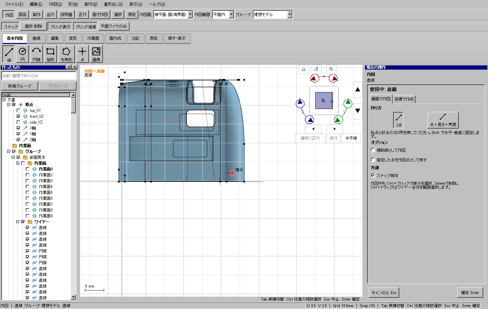

サーフェスとソリッドのフェイスを「面で作図」から直接作図面に設定する。文書に別の作業平面を追加しない。上部の「作図面」に対象名を表示し、既存の平面との切替と、3Dビューから別の面を指定する入口を設けた。曲面はユーザー指定どおり、指した位置の接平面を使う。
「平面ワイヤのみ」でも作図基準の面を残す。選択したネイティブフェイスから内側の境界も取り出し、入力シーンへ補う。三角形の辺から線を復元せず、独立した編集ワイヤーも追加しない。製作近似用の外形データと元の形状は変更しない。
115投影.kcd2の複製操作で面指定、作図、Undo/Redo、保存・再読込を確認。元の面・部品数を維持する。原本のSHA-256は前後とも 84c716b3e6af1ae8f87da4ee4df92226ef326b03e1e44f8c6ce7f84152125ede。

最初の試験で、形状ガイドの製作用外形だけでは円形の穴の縁が入力候補に入らないことを再現した。外形の用途は変えず、ネイティブフェイスの全境界を私有UI入力へ接続して再試験した。グリッド試験の座標が実境界のスナップ半径へ入る例は、境界優先の製品規則を維持し、境界から離れた格子点で検証するように修正した。
最初の全体検証は配布UI661件まで失敗0の段階で中断。レビューで、一度作図に使った面を非表示にすると補完境界だけが残る経路を発見し、左一覧のチェックを実際に押す試験で不合格を再現した。元Featureの有効状態と、面・親グループの表示に従うよう補完入力を修正。中断ログは out/verification/direct-face-windows-20261118/interruption.json に保持する。
重点試験の証拠は out/direct-face-20261118/。最初のWindows24件と画面なし23件は成功。表示回帰を加えて再確認し、新しい実行IDで完成候補の全体・配布版検証を行う。公開結果は、この欄へ追記する。